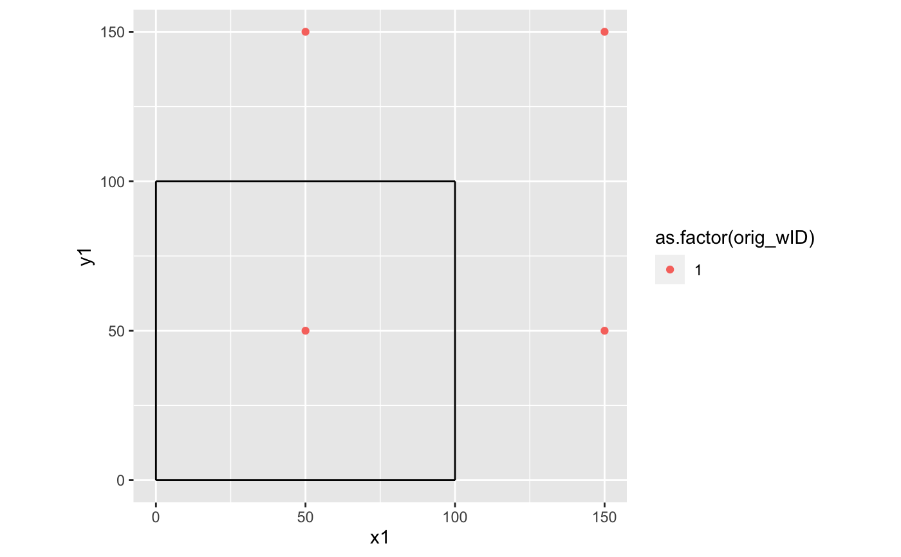

generate_image_wells.RdMirror wells across 2 parallel bounds, then the two perpendicular bounds
generate_image_wells(wells, aquifer, include_image_columns = FALSE)
| wells | Wells with columns Q, R, diam, x, y |
|---|---|
| aquifer | Aquifer object with bounds defined including columns for bID, bound_type, m, b |
| include_image_columns | If FALSE, no new columns are added. If TRUE, columns for well imaging are included in the result. |
A tibble containing original and mirrored wells, with the following columns:
x, y, Q, diam, path, orig_wID, transform (boundary type), source_bound.
For image wells that generated, NA values are used to fill fields
for columns that are not generated by this function.
If include_image_columns is TRUE, the following additional columns
are included in the results:
transform: bound_type of boundary over which well was imaged
source_bound: bID of boundary over which well was imaged
path: complete history of imaging for a given image well, tracking back to the "Actual" well
max_mirror_dist: maximum mirror distance for a well and wells in its path (well-to-boundary distance)
level: number of images in path. "Actual" wells (level 0), first image (1), second image (2), etc.
dist: distance to nearest boundary (i.e., distance to the aquifer). The results are filtered for R > dist
The function requires that the wells are labeled with a column of identifiers, wID. If it is not present, the function generates them. The image well wID's are always generated automatically. not present.
The original wells are labelled L0. These wells are mirrored across a set of parallel boundaries. Each mirrored well (L1) has a source well (L0) and source boundary (the bound across which it was mirrored). The L1 wells then need to be mirrored across the other parallel boundary. The wells from level Lx are mirrored across the other boundary (ie, not the source boundary), and each mirror well (L+) has a source well (Lx) and source boundary (the bound across which it was mirrored). This is done for a first set of parallel boundaries, then repeated for the other two perpendicular boundaries.
well1 <- define_wells(x=50,y=50,Q=20,R=100,diam=1) well2 <- define_wells(x=25,y=75,Q=20,R=100,diam=1) wells <- define_wells(rbind(well1,well2))#> Warning: Some wIDs are duplicates. Replacing all wIDs with row_numberbounds <- define_bounds(data.frame(bound_type=c("CH","NF","NF","NF"), m=c(Inf,0,Inf,0),b=c(0,0,100,100))) aquifer <- define_aquifer("unconfined",Ksat=1e-4,bounds=bounds) image_wells <- generate_image_wells(wells,bounds) bounds <- data.frame(bound_type=c("PB","PB","CH","NF"),m=c(Inf,0,Inf,0),b=c(0,0,100,100)) aquifer <- define_aquifer("unconfined",Ksat=1e-4,bounds=bounds) image_wells <- generate_image_wells(well1,aquifer,include_image_columns=TRUE) library(ggplot2) ggplot() + geom_segment(data=aquifer$bounds,aes(x1,y1,xend=x2,yend=y2)) + geom_point(data=image_wells,aes(x,y,color=as.factor(orig_wID))) + scale_shape_manual(values=c(1,16)) + coord_equal()